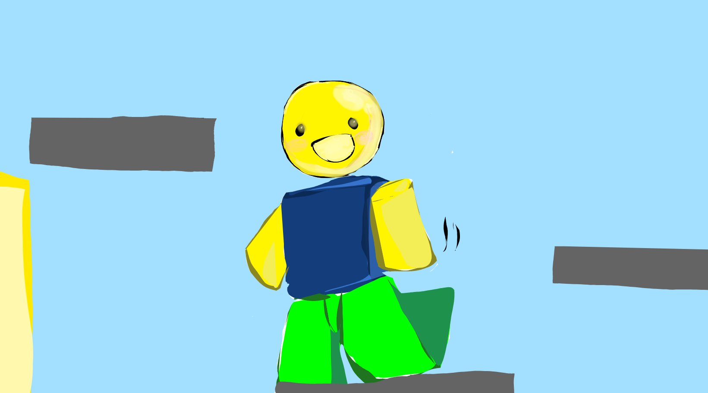

How to play: W for jumping A for moving left D for moving right Wx2 for double jump About the game: In the game you play as a character getting through the levels which slowly grow in difficulty. There are little purple squares that chase after you, which try to eat you and will make you reset in the harder levels. Lava in reddish patches on the floor will do the same as the purple squares and make you reset. Tips for playing: Jumping on the green blobs makes you jump super high! Watch out for them. You can wait out the purple squares. They are super slow. Do not jump on the purple squares. Just sitting in front of them is not the only way they can kill you.
